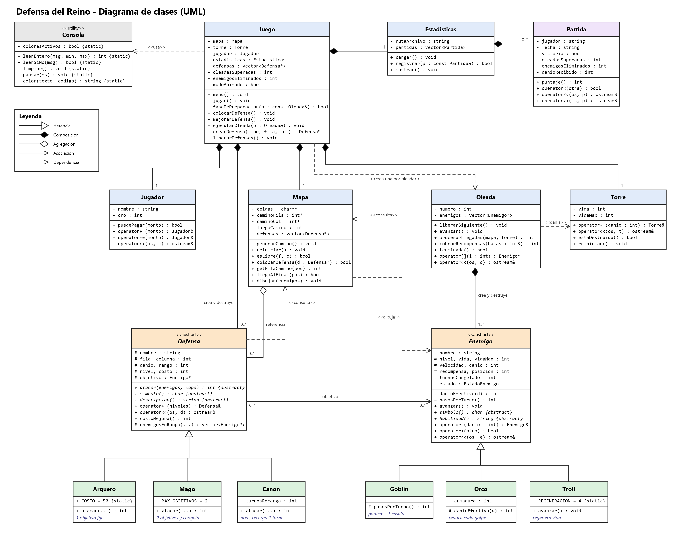
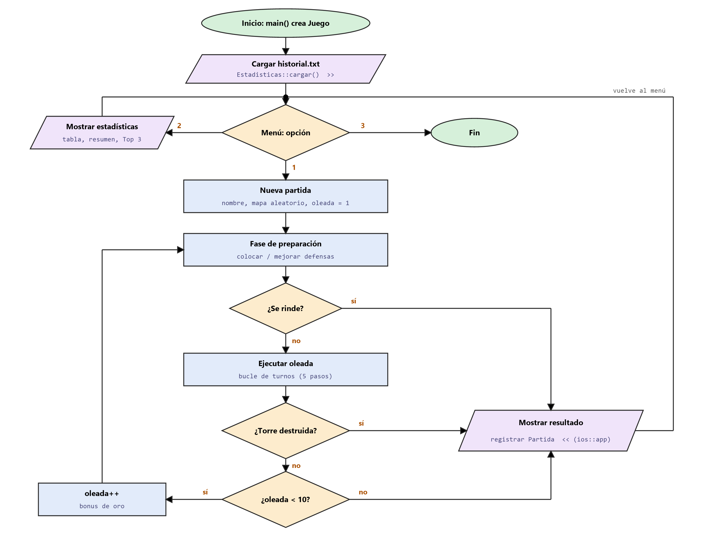
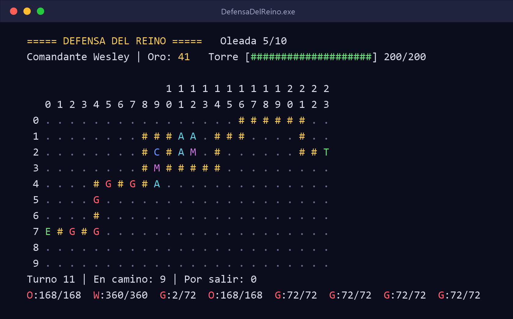

Defensa del Reino: Juego de Estrategia en Consola Desarrollado con Programación Orientada a Objetos en C++
Cristopher Aron Lopez Garay, Wesley Rivaldo Laura Choquejahua, Ernesto Sebastian Davila Quichca, Gonzalo Alejandro Ugaz Espinoza y Santiago Nicolás Villacorta Nacurena
Departamento de Ciencia de la Computación, Universidad de Ingeniería y Tecnología (UTEC)
Programación II – Laboratorio (2026-2)
Docente: [Nombre del docente]
24 de noviembre de 2026
Defensa del Reino: Juego de Estrategia en Consola Desarrollado con Programación Orientada a Objetos en C++
Este informe documenta el diseño y la implementación de Defensa del Reino, un videojuego de estrategia del género tower defense que se ejecuta en la consola y está escrito en C++ bajo el paradigma de programación orientada a objetos (POO). El proyecto responde al enunciado del curso Programación II, que pide un menú principal con tres opciones (jugar, ver estadísticas y salir), un mapa en caracteres ASCII, diez oleadas de enemigos de nivel creciente, defensas que se pueden colocar y mejorar, y un historial de partidas guardado en un archivo. Además, el enunciado exige aplicar clases, punteros, arreglos, matrices, vectores, las cuatro relaciones entre clases (asociación, agregación, composición y herencia), el polimorfismo por herencia y la sobrecarga de operadores, con la restricción de que todo el código esté dentro de clases y de que la función main solo invoque el menú.
El proyecto fue desarrollado por un equipo de cinco estudiantes de la carrera de Ciencia de la Computación. Aunque cada integrante tuvo un área principal (Tabla 1), todos revisaron el código de los demás, de modo que cualquiera puede explicar cualquier parte del programa.
Tabla 1
Distribución del Trabajo entre los Integrantes
| Integrante | Responsabilidades principales |
|---|---|
| Cristopher Aron Lopez Garay | Clase Juego: menú principal, fase de preparación, tienda y bucle de oleadas. |
| Wesley Rivaldo Laura Choquejahua | Estructura del repositorio, integración de ramas en GitHub y clases Torre y Jugador. |
| Ernesto Sebastian Davila Quichca | Primer avance: jerarquías Enemigo y Defensa, Mapa y Oleada inicial. |
| Gonzalo Alejandro Ugaz Espinoza | Clases Estadisticas y Partida: lectura y escritura del archivo de historial. |
| Santiago Nicolás Villacorta Nacurena | Diagrama de clases, diagrama de flujo, informe y presentación. |
Nota. Todos los integrantes participaron en las pruebas, la revisión cruzada del código y la preparación de la exposición.
Los juegos de defensa de torres (tower defense) son un subgénero de la estrategia en el que el jugador no controla directamente a sus unidades: coloca estructuras defensivas junto a un camino por el que avanzan oleadas de enemigos y debe impedir que estos alcancen un objetivo. Avery et al. (2011) señalan que el género es un buen banco de pruebas para la computación porque combina reglas simples con un espacio de decisiones amplio: dónde construir, qué tipo de defensa elegir y cuándo invertir en mejoras. En el enunciado del proyecto, el reino ficticio de Eldoria es atacado por hordas que siguen un camino fijo hacia la torre central, y el jugador asume el papel del comandante que organiza la defensa.
El juego es una excusa didáctica muy adecuada para la POO, porque sus elementos se corresponden de forma natural con objetos que tienen estado y comportamiento: la torre tiene vida, las defensas tienen daño y alcance, y los enemigos se mueven y reciben daño. Las variantes de un mismo concepto, como los distintos tipos de enemigo y de defensa, piden herencia y polimorfismo. Las interacciones entre los elementos (una defensa que apunta a un enemigo, un mapa que muestra las defensas, una oleada que crea y destruye a sus enemigos) obligan a distinguir con precisión entre asociación, agregación y composición. Por último, el historial de partidas introduce la persistencia mediante archivos.
Implementar un sistema completo, y no ejercicios aislados, obliga a tomar decisiones de diseño reales: quién es dueño de cada objeto y quién debe liberar su memoria, cómo se evita la dependencia circular entre clases, cómo se valida la entrada del usuario y cómo se equilibra la dificultad para que el juego sea retador pero ganable. Estas decisiones son el núcleo de la competencia que el curso busca desarrollar y se documentan en las secciones siguientes.
La POO organiza un programa como un conjunto de objetos que cooperan, cada uno instancia de una clase que define sus atributos (estado) y métodos (comportamiento) (Stroustrup, 2013). Sus pilares son el encapsulamiento, que oculta el estado interno detrás de una interfaz pública mediante los modificadores private, protected y public; la abstracción, que expone solo lo esencial de un concepto; la herencia, que permite definir una clase a partir de otra, y el polimorfismo, que permite tratar de forma uniforme objetos de clases distintas (Deitel y Deitel, 2017; Joyanes Aguilar, 2006).
La herencia modela una relación «es un»: un Goblin es un Enemigo. Una clase es abstracta cuando declara al menos una función virtual pura (virtual char simbolo() const = 0;), por lo que no puede instanciarse y solo sirve como base. El polimorfismo dinámico en C++ se logra con funciones virtual invocadas a través de punteros o referencias a la clase base: el método que se ejecuta se decide en tiempo de ejecución según el tipo real del objeto (enlace dinámico). Por ese mismo motivo, una clase base polimórfica debe tener un destructor virtual; si no, al hacer delete mediante un puntero a la base no se ejecutaría el destructor de la clase derivada (Stroustrup, 2013).
El Lenguaje Unificado de Modelado (UML) distingue varios tipos de relación (Booch et al., 2005; Object Management Group, 2017). La asociación es un vínculo estructural en el que un objeto conoce a otro y puede enviarle mensajes, sin que ninguno controle la vida del otro. La agregación es una asociación «todo-parte» débil: el todo referencia a sus partes, pero estas pueden existir sin él. La composición es una relación «todo-parte» fuerte: las partes son creadas y destruidas por el todo y no lo sobreviven. La dependencia indica un uso temporal, por ejemplo cuando un objeto recibe a otro como parámetro.
C++ permite redefinir el significado de la mayoría de los operadores para tipos definidos por el usuario, siempre que al menos un operando sea de ese tipo (cppreference.com, s.f.-a). La sobrecarga puede implementarse como método miembro (el operando izquierdo es *this) o como función amiga (friend), que es necesaria cuando el operando izquierdo no pertenece a la clase, como ocurre en operator<<(std::ostream&, const T&). Los operadores compuestos como += y -= devuelven por convención una referencia a *this para permitir el encadenamiento.
Los operadores new y delete reservan y liberan memoria en el montículo (heap). Una matriz dinámica se construye como un arreglo de punteros (char**) en el que cada fila es a su vez un arreglo. Cuando una clase administra un recurso de este tipo, la regla de tres establece que, si necesita un destructor propio, también necesita definir o prohibir el constructor de copia y el operador de asignación; de lo contrario, la copia superficial produce dos objetos que liberan la misma memoria (doble delete) (cppreference.com, s.f.-b).
La biblioteca <fstream> ofrece las clases ifstream y ofstream para leer y escribir archivos con la misma interfaz que cin y cout. El modo std::ios::app agrega datos al final sin borrar el contenido previo, lo que resulta adecuado para un historial (Deitel y Deitel, 2017). Sobrecargar << y >> para una clase permite serializarla y deserializarla de forma simétrica.
Un videojuego se estructura alrededor de un bucle principal que, en cada iteración, procesa la entrada, actualiza el estado del mundo y lo dibuja (Nystrom, 2014). En un juego por turnos como este, cada iteración del bucle de una oleada equivale a un turno en el que las entidades actúan en un orden fijo y determinista.
El equipo trabajó de forma incremental con el sistema de control de versiones Git y un repositorio compartido en GitHub, con una rama por integrante que se integraba a la rama principal mediante pull requests. En un primer avance se construyeron las jerarquías de enemigos y defensas, la torre, el mapa y una oleada inicial. Después se completaron el controlador del juego, las estadísticas y el guardado en archivo, se separó cada clase en archivo de cabecera (.h) e implementación (.cpp) y se agregó un archivo CMakeLists.txt para compilar en distintos entornos. El desarrollo se realizó en Visual Studio Code con el compilador g++ 15 de MSYS2 (estándar C++17). El código se verificó con advertencias estrictas del compilador (-Wall -Wextra -Wpedantic) y con los detectores de errores de memoria AddressSanitizer y UndefinedBehaviorSanitizer, y se probó tanto en Linux como en Windows.
El sistema consta de 16 clases distribuidas en 33 archivos fuente (unas 1 800 líneas). La Figura 1 muestra el diagrama de clases en notación UML con la jerarquía y todas las relaciones. La clase Juego es el controlador: contiene el menú, el estado de la partida y el bucle de oleadas. La función main se limita a crear un objeto Juego y llamar a su método menu(), tal como exige el enunciado.
Figura 1
Diagrama de Clases de Defensa del Reino

Nota. Los nombres en cursiva corresponden a clases abstractas y a métodos virtuales puros. + = público, - = privado, # = protegido. Elaboración propia.
La Tabla 2 explica cada relación y cómo se refleja en el código, que es el criterio usado para distinguirlas: quién crea el objeto, quién lo destruye y si la vida de uno depende de la del otro.
Tabla 2
Relaciones entre Clases y su Implementación
| Relación | Clases | Evidencia en el código |
|---|---|---|
| Herencia | Enemigo → Goblin, Orco, TrollDefensa → Arquero, Mago, Canon | class Goblin : public Enemigo. Las bases son abstractas (tienen métodos virtuales puros) y su destructor es virtual. |
| Composición | Juego ◆ Mapa, Torre, Jugador, Estadisticas | Son atributos por valor: se construyen y destruyen junto con Juego. |
| Composición | Juego ◆ Defensa | Juego crea cada defensa con new y la destruye con delete en liberarDefensas(). |
| Composición | Oleada ◆ Enemigo | El constructor de Oleada crea los enemigos y su destructor los libera: al terminar la oleada, sus enemigos desaparecen. |
| Composición | Estadisticas ◆ Partida | vector<Partida> que guarda los registros por valor. |
| Agregación | Mapa ◇ Defensa | Mapa guarda vector<Defensa*> para dibujarlas y validar casillas, pero nunca las elimina, porque pertenecen a Juego. |
| Asociación | Defensa → Enemigo | Atributo Enemigo* objetivo: la defensa recuerda a quién apunta entre turnos. El Arquero lo usa para perseguir siempre al mismo enemigo. |
| Dependencia | Juego ⇢ Oleada; Defensa ⇢ Mapa; Oleada ⇢ Torre | Uso temporal: un objeto local o un parámetro de método. |
Nota. ◆ = composición, ◇ = agregación, → = asociación, ⇢ = dependencia.
Cada tipo de enemigo y de defensa redefine uno o más métodos virtuales, lo que satisface el requisito de que cada enemigo tenga su propio comportamiento y de que el método atacar varíe según el tipo de defensa. La Tabla 3 resume sus características.
Tabla 3
Tipos de Enemigos y Defensas
| Clase | Valores base (nivel 1) | Comportamiento polimórfico |
|---|---|---|
| Goblin (G) | Vida 30, velocidad 2, daño 5, oro 4 | Redefine pasosPorTurno(): con menos de la mitad de vida entra en pánico y corre una casilla extra. |
| Orco (O) | Vida 70, velocidad 1, daño 12, oro 8 | Redefine danioEfectivo(): su armadura (2 + nivel) reduce cada golpe. |
| Troll (W) | Vida 150, velocidad 1, daño 25, oro 15 | Redefine avanzar(): regenera el 4 % de su vida máxima cada turno. |
| Arquero (A) | Costo 50, daño 15, rango 4 | Fija un objetivo (asociación) y lo ataca mientras siga vivo y en rango. |
| Mago (M) | Costo 90, daño 20, rango 3 | Golpea a los dos enemigos más adelantados y los congela un turno. |
| Cañón (C) | Costo 150, daño 30, rango 2 | Daño en área a todos los enemigos en rango; necesita un turno de recarga. |
Nota. El nivel del enemigo es igual al número de la oleada. Por cada nivel aumenta su vida en 35 %, su daño en 25 % y su recompensa en 1; desde la oleada 7 su velocidad sube en 1. Cada mejora de una defensa (operador +=) suma 10 de daño y, en los niveles 2 y 4, una casilla de alcance (nivel máximo 4).
Se sobrecargaron operadores en seis clases, siempre con un significado intuitivo dentro del dominio del juego (Tabla 4). Por ejemplo, el daño a un enemigo se escribe *objetivo - danio;, tal como sugiere el enunciado, y la mejora de una defensa se escribe *defensa += 1;.
Tabla 4
Operadores Sobrecargados
| Clase | Operador | Significado |
|---|---|---|
Enemigo | -, >, << | Aplica daño; compara qué enemigo está más adelantado (se usa para ordenar objetivos); muestra su información. |
Defensa | +=, << | Sube de nivel (más daño y alcance); muestra su información. |
Torre | -=, << | Recibe daño; dibuja una barra de vida con color. |
Jugador | +=, -=, << | Gana oro; gasta oro (nunca queda negativo); muestra nombre y oro. |
Oleada | [], << | Acceso al i-ésimo enemigo con control de límites; resumen de la oleada. |
Partida | <<, >>, < | Escribe y lee una línea del archivo de historial; compara puntajes para el ranking. |
El terreno del mapa es una matriz dinámica char** celdas de 10 × 24 creada con new, y las coordenadas del camino se almacenan en dos arreglos dinámicos paralelos (int* caminoFila e int* caminoCol). La tienda usa un arreglo estático de precios. Los vectores almacenan punteros a la clase base (vector<Enemigo*> y vector<Defensa*>), que es lo que permite el polimorfismo. Las clases que administran memoria dinámica (Mapa, Oleada y Juego) prohíben la copia con = delete para cumplir la regla de tres.
Al iniciar cada partida, el mapa genera un camino aleatorio: parte de una fila al azar en la columna 0 y alterna tramos horizontales hacia la derecha (de 2 a 5 casillas) con tramos verticales (de 1 a 3 casillas) hasta llegar a la última columna, donde se ubica la torre (T). Como el camino nunca retrocede, no se cruza consigo mismo y el algoritmo siempre termina. La entrada se marca con E, que es la posición inicial de los enemigos.
La Figura 2 resume el algoritmo completo del programa, desde el menú principal hasta el registro de la partida. Desde el menú principal, la opción «Jugar» pide el nombre del comandante y si se desea ver las oleadas animadas. La partida tiene 10 oleadas. Antes de cada una, en la fase de preparación, el jugador ve el mapa con coordenadas y puede colocar defensas, mejorarlas, revisar su lista o consultar los enemigos que se acercan. Al superar una oleada recibe un bono de 30 + 5n monedas de oro, donde n es el número de oleada. Si la torre resiste las 10 oleadas, el jugador gana; si su vida llega a 0, pierde. En ambos casos el resultado se agrega al archivo historial.txt y el programa vuelve al menú.
Figura 2
Diagrama de Flujo de una Ejecución del Programa

Nota. Los rombos son decisiones, los rectángulos son procesos y los paralelogramos son entradas o salidas (pantalla y archivo). El ciclo de la izquierda repite la preparación y la oleada hasta completar 10 oleadas. Elaboración propia.
Cada oleada se ejecuta en un bucle de turnos que termina cuando todos los enemigos fueron eliminados o llegaron a la torre, o cuando la torre es destruida. En cada turno ocurren cinco pasos en orden fijo:
while (!oleada.terminada() && !torre.estaDestruida()) {
oleada.liberarSiguiente(); // 1. entra un enemigo
for (Defensa* d : defensas) // 2. atacan las defensas
d->atacar(oleada.getEnemigos(), mapa); // (polimorfismo)
jugador += oleada.cobrarRecompensas(bajas); // 3. oro por eliminados
oleada.avanzar(); // 4. se mueven (polimorfismo)
oleada.procesarLlegadas(mapa, torre); // 5. danan la torre
}
La línea d->atacar(...) muestra el polimorfismo: d es un Defensa*, pero en tiempo de ejecución se invoca el atacar del Arquero, del Mago o del Cañón según el objeto real. Del mismo modo, oleada.avanzar() llama a avanzar() en cada enemigo, y el Troll ejecuta su versión con regeneración. Las defensas eligen su objetivo con la distancia Manhattan, |Δfila| + |Δcolumna| ≤ rango, y priorizan al enemigo más adelantado en el camino. La Figura 3 muestra un turno real de la oleada 5: los enemigos (G, O, W) salen de la entrada E, las defensas (A, M, C) los atacan desde los costados del camino (#) y debajo del mapa se ve la vida de cada enemigo.
Figura 3
Captura del Juego durante la Oleada 5 (Modo Animado)

Nota. Salida real del programa en la consola. Los colores se obtienen con secuencias de escape ANSI desde la clase Consola. Elaboración propia.
Cada enemigo pasa por los estados EnEspera, EnCamino y, al final, Eliminado o LlegoATorre (enumeración EstadoEnemigo). Los enemigos eliminados no se borran durante la oleada; solo cambian de estado. De esa forma, el puntero objetivo de las defensas nunca queda apuntando a memoria liberada. Al terminar la oleada, Juego llama a olvidarObjetivo() en cada defensa antes de que el destructor de Oleada libere a los enemigos. La recompensa se cobra una sola vez gracias a la bandera recompensaCobrada.
La clase Estadisticas lee historial.txt al iniciar el programa y agrega una línea al final de cada partida. El archivo es una tabla legible: cada línea tiene las columnas jugador, fecha, resultado, oleadas, eliminados, daño, oro y defensas, alineadas con ancho fijo (setw) y separadas por |. Se escribe con operator<< y se lee con operator>> de Partida, que separa por | y quita los espacios. Las líneas que empiezan con # son comentarios y las líneas corruptas se ignoran sin detener el programa. La opción «Ver estadísticas» muestra la tabla de partidas, un resumen (victorias, porcentaje, enemigos eliminados, daño promedio) y un ranking de los tres mejores puntajes, ordenado con operator<.
Toda lectura numérica pasa por Consola::leerEntero, que lee la línea completa, la convierte con stoi y rechaza el texto no numérico y los valores fuera de rango, así que una letra no deja cin en estado de error. La clase Consola agrupa además las utilidades de pantalla (colores ANSI, limpieza y pausas) en métodos estáticos, lo que respeta la regla de no tener funciones sueltas.
Para verificar que el algoritmo produce un juego equilibrado, se programó un simulador que juega partidas completas con distintas estrategias automáticas y se ejecutaron 300 partidas por estrategia (Tabla 5). Con la primera versión de los parámetros, una estrategia sencilla ganaba el 100 % de las veces sin recibir daño. Por eso se ajustaron las recompensas, el escalado de vida y el costo de las mejoras hasta que la estrategia del jugador influyera de verdad en el resultado.
Tabla 5
Resultados de 300 Partidas Simuladas por Estrategia
| Estrategia | Victorias | Resultado típico |
|---|---|---|
| No construir defensas | 0 % | Pierde en la oleada 4 |
| Colocar al azar junto al camino, solo arqueros | 0 % | Pierde entre las oleadas 6 y 8 |
| Colocar al azar, mezcla de defensas y mejoras | 60 % | Gana o pierde en las oleadas 8 a 10 |
| Ubicación óptima, solo arqueros | 18 % | Suele perder entre las oleadas 8 y 10 |
| Ubicación óptima, mezcla de defensas y mejoras | 98 % | Gana con poco daño |
Nota. La ubicación óptima elige la casilla libre que cubre más casillas del camino. Elaboración propia.
Se desarrolló un juego de consola completo y funcional que cumple todos los requisitos del enunciado: menú principal con tres opciones, mapa ASCII con camino, torre, entrada y defensas, colocación y mejora de defensas antes de cada oleada, diez oleadas de enemigos con niveles que afectan su velocidad, resistencia y daño, y un historial de partidas persistente en archivo.
El polimorfismo por herencia resultó ser la herramienta central del diseño. Gracias a que Juego y Oleada solo trabajan con punteros a Defensa y a Enemigo, agregar un nuevo tipo de defensa o de enemigo solo requiere crear una clase derivada y redefinir sus métodos virtuales, sin modificar el bucle principal. Esto ilustra el principio abierto/cerrado: el sistema está abierto a la extensión y cerrado a la modificación.
Distinguir entre composición, agregación y asociación no es solo una cuestión de notación en el diagrama: determina quién es responsable de liberar la memoria. Haber definido que Juego es dueño de las defensas y que Mapa solo las referencia evitó errores de doble liberación, y la decisión de no borrar enemigos durante la oleada eliminó el riesgo de punteros colgantes en la asociación Defensa → Enemigo. Estas decisiones se verificaron con AddressSanitizer sin detectar fugas ni accesos inválidos.
La sobrecarga de operadores hizo el código más expresivo y cercano al lenguaje del problema (torre -= danio, *defensa += 1), siempre que el operador conserve un significado intuitivo. Además, la sobrecarga simétrica de << y >> en Partida simplificó la lectura y la escritura del archivo de historial.
Las pruebas por simulación mostraron que la corrección del código no basta: un juego también debe estar equilibrado. Medir el resultado de cientos de partidas permitió ajustar los parámetros con datos en lugar de intuición. Como trabajo futuro se propone agregar más tipos de enemigos (por ejemplo, voladores que ignoren el camino), un jefe final, la posibilidad de vender defensas y guardar una partida en curso en un archivo binario.
Durante el desarrollo se utilizó el asistente de inteligencia artificial Claude (Anthropic, 2026) como apoyo para revisar el código existente, proponer mejoras de diseño (separación en archivos .h/.cpp, regla de tres, validación de entrada), generar el diagrama de clases y estructurar este informe. El equipo revisó, probó y comprendió todo el código entregado y es responsable de su contenido.
Anthropic. (2026). Claude (versión Opus 5.5) [Modelo de lenguaje de gran tamaño]. https://claude.ai
Avery, P., Togelius, J., Alistar, E., & van Leeuwen, R. P. (2011). Computational intelligence and tower defence games. En 2011 IEEE Congress of Evolutionary Computation (CEC) (pp. 1084–1091). IEEE. https://doi.org/10.1109/CEC.2011.5949738
Booch, G., Rumbaugh, J., & Jacobson, I. (2005). The unified modeling language user guide (2.ª ed.). Addison-Wesley.
cppreference.com. (s.f.-a). Operator overloading. Recuperado el 24 de noviembre de 2026, de https://en.cppreference.com/w/cpp/language/operators
cppreference.com. (s.f.-b). The rule of three/five/zero. Recuperado el 24 de noviembre de 2026, de https://en.cppreference.com/w/cpp/language/rule_of_three
Deitel, P., & Deitel, H. (2017). C++ how to program (10.ª ed.). Pearson.
Joyanes Aguilar, L. (2006). Programación en C++: Algoritmos, estructuras de datos y objetos (2.ª ed.). McGraw-Hill.
Nystrom, R. (2014). Game programming patterns. Genever Benning. https://gameprogrammingpatterns.com
Object Management Group. (2017). OMG Unified Modeling Language (OMG UML), version 2.5.1. https://www.omg.org/spec/UML/2.5.1
Stroustrup, B. (2013). The C++ programming language (4.ª ed.). Addison-Wesley.